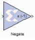

Negate This block is listed in the following Xilinx Blockset libraries: Math and Index. The Xilinx Negate block computes the arithmetic negation (two's complement) of its input. The block can be implemented either as a Xilinx LogiCORE™ or as a synthesizable VHDL module. Block Parameters The block parameters dialog box can be invoked by double-clicking the icon in your Simulink model. Parameters used by this block are explained in the topic Common Options in Block Parameter Dialog Boxes.